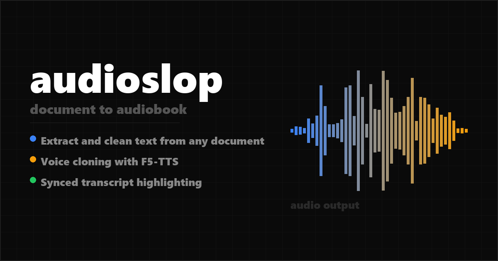

audioslop
Turn documents into audiobooks with your own voice.
Multi-format input
.docx, .pdf, .srt, .txt, .md
Voice cloning
Clone any voice from a 5-second clip
Synced transcript
Words highlight as the narrator reads
View on GitHub
Setup guide